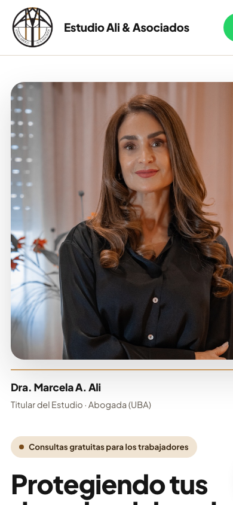
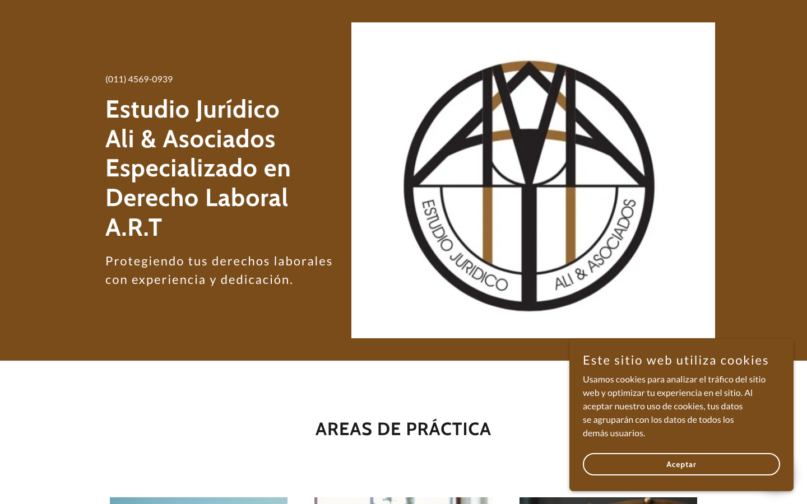
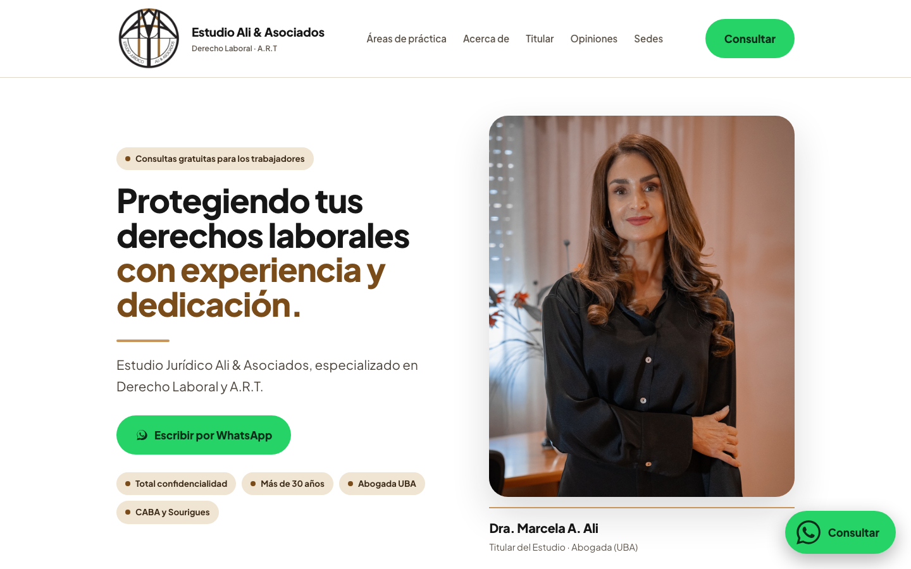

Estudio jurídico laboralista · CABA y Berazategui
Un estudio con más de 30 años de trayectoria y 4,9 de puntuación en Google, con una web que no dejaba ver nada de eso. No le cambiamos los textos: le cambiamos el orden y el diseño.
El logo ocupaba la pantalla entera, el titular se cortaba por la mitad y el cartel de cookies tapaba el resto. No había un solo botón para escribir.
El titular se corta en “Especializado en Dere…” y el cartel de cookies tapa lo que queda.

Entra el retrato, el titular completo y el botón de WhatsApp, todo sin scrollear.

